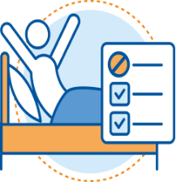
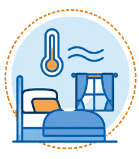

O que o sono proporciona?
O sono renova suas energias e prepara você para um novo dia. Dormir bem melhora o foco, o humor e a qualidade de vida.
Alguns fatores que podem te ajudar a descançar corretamente são:
-
Evitar pensar em problemas ou preocupações do dia a dia;
-
Ter um ambiente adequado e que ajude no sono;
-

Criar uma rotina regular e fixar um horário para dormir;
-

manter uma temperatura agradável no local;
-
manter uma dieta leve no período noturno;
Qual é a importância do sono?
O sono desempenha um papel importante na manutenção da saúde física e mental. Dormir por tempo suficiente e com boa qualidade favorece o funcionamento do cérebro, contribui para a aprendizagem e a memória, auxilia na recuperação do organismo e ajuda a manter a atenção e o bem-estar ao longo do dia.
ler maisQuais as consequências de um mal sono?
A falta de um sono adequado pode afetar a saúde física e mental de diversas maneiras. No curto prazo, pode causar sonolência durante o dia, dificuldade de concentração, alterações de humor e redução do desempenho nas atividades diárias. Quando o problema se torna frequente, aumenta o risco de desenvolver doenças como hipertensão, diabetes tipo 2, obesidade e problemas cardiovasculares, além de comprometer o sistema imunológico.
ler maisoque acontece com o nosso corpo quando estamos dormindo?
Durante o sono, o corpo passa por diferentes fases que são importantes para a recuperação física e mental. Nas fases mais profundas do sono, a frequência cardíaca e a respiração diminuem, os músculos relaxam, ocorre a liberação de hormônios, os tecidos são reparados e as reservas de energia são restauradas. Já durante o sono REM, o cérebro permanece bastante ativo, sendo essa fase fundamental para a consolidação da memória, da aprendizagem e do processamento das informações adquiridas ao longo do dia.
ler mais